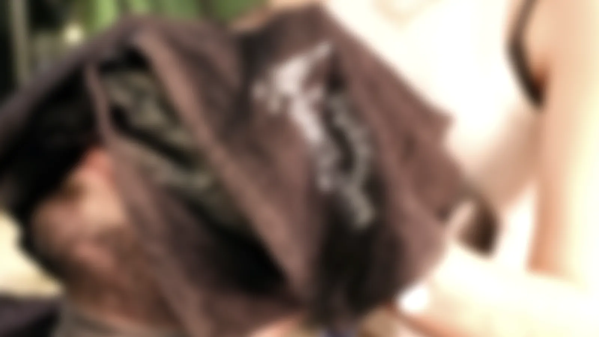

Sainte-Anne Barber
Coupe, barbe, soins du visage. 10 rue Ranchin, dans l'Écusson, à l'ombre du Carré Sainte-Anne. Avec ou sans rendez-vous.
À l'ombre du Carré Sainte-Anne.

Une rue étroite de l'Écusson, entre les ateliers et les galeries du quartier Sainte-Anne.
Le salon a ouvert en novembre 2025 et n'a pas cherché à faire de bruit. De la brique, du cuir noir, des lampes à filament, et le temps de faire les choses proprement.
Du lundi au samedi, de 9h à 19h. Vous pouvez réserver, ou pousser la porte.


Le geste



Puis on coupe. Net.On regarde la forme du visage, l'implantation, la façon dont vous portez vos cheveux. On écoute ce que vous n'arrivez pas à décrire.
Coupe aux ciseaux, finition à la lame
La carte.
Des prix simples, affichés. Le soin visage et la boisson s'ajoutent à n'importe quelle formule.
- Coupe30 min25 €
- Coupe et barbe40 min35 €
- Barbe15 min15 €
- Barbe et soinhuile, serviette chaude20 €
- Coupe, barbe et soin visageblack mask45 €
- Coupe étudiantsur présentation de la carte20 €
- Coupe et barbe étudiantsur présentation de la carte30 €
- Coupe enfantmoins de 15 ans18 €
Boisson healthy en option, 3 €. Cire nez ou oreilles, soin visage complet : voir la carte complète.

Tony et Loïc.
Deux barbiers, une façon de travailler : on écoute d'abord, on propose ensuite, et on ne lâche pas la finition.


« Il a su mettre une coupe là où je ne trouvais pas les mots. »Avis Google
« Propre, à l'écoute et coupe nickel. »Avis Planity
« Ambiance feutrée et accueil chaleureux. »Avis Planity
Noté 5,0 sur 5 sur Google et 4,9 sur Planity. Le salon sur Instagram.